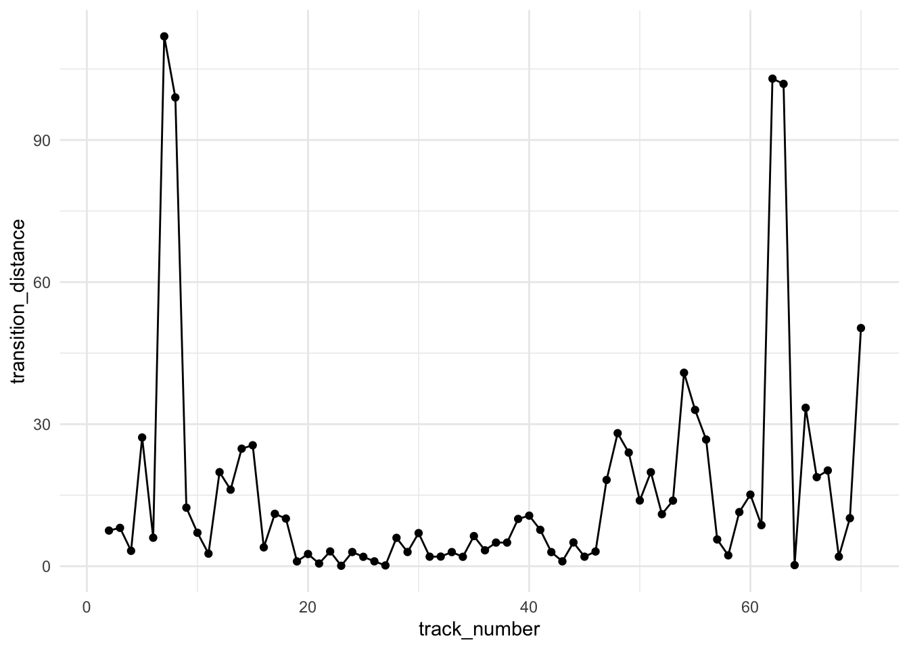
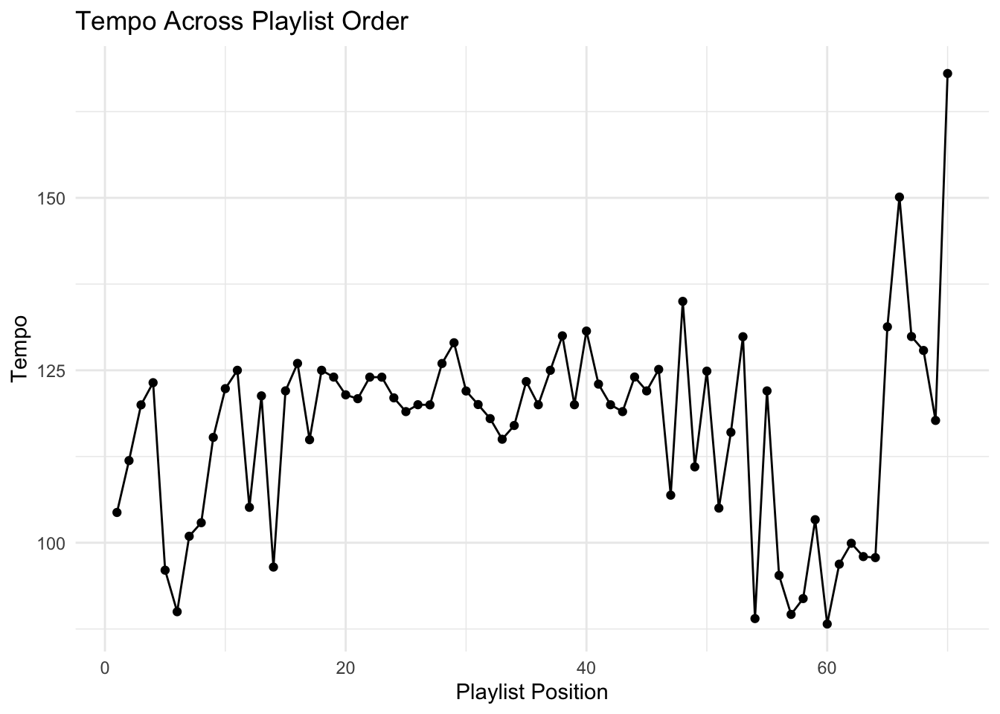
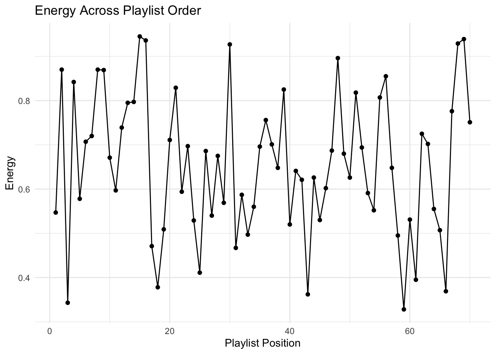
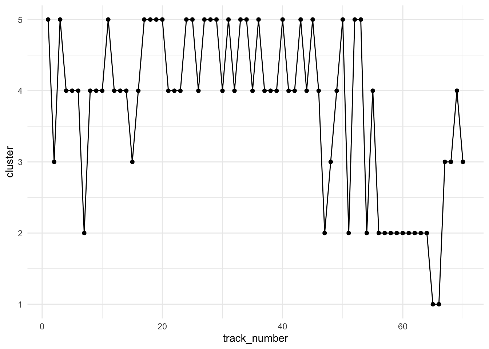
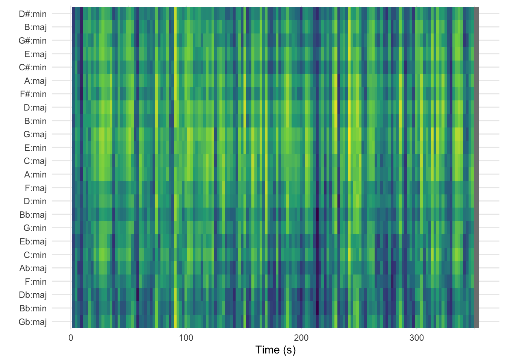

Groove Analysis
Intro
This repository was created for the course Computational Musicology at the University of Amsterdam.
It contains an analysis of a selected corpus of music from my playlist “I Don’t Want This Groove to Ever End”.
The Playlist
The playlist “I Don’t Want This Groove to Ever End”, named after its first track, is a collection of what I find groovy songs: tracks that are heavily based on a looped or recurring musical phrase or rhythmic pattern. Only songs of around 6 minutes or longer get added to this playlist, to allow the listener to immerse themselves in each one.
The tracks are mostly unique and vary greatly, and hearing a contrasting groove immediately after another can disrupt the listening experience. To prevent this, I have put a lot of thought into arranging their order.
The Analysis
The goal of the conducted analysis will be to show how well some musical features can be used to determine the order of the playlist, based on the similarity of the tracks. The following musical featuers will be used: - like Spotify track-level features, - chroma, timbre, and temporal features, - and volume or loudness
You can view and listen to the playlist here:
Mix of features
After having loaded the playlist, I deleted the last four tracks from the data frame that will be analyzed, since they are not yet assigned a place in the playlist. I have then computed the transition distance across all features. This will allow me to check for spikes along the playlist length to see which moments or tracks have the least smooth transitions so that I can focus on those.
Note that the distances of subsequent points on the graph does not correspong to a bigger spike, but for each track the transition distance from the previous one is shown. This means that everywhere there is a spike, there is a large transition distance.
Also as the first song has none before it, it is omitted from the graph, we start with the second track.
This graph shows that when we take a couple of the track-level features, namely: energy, tempo and danceability, the following transitions are between most different songs:
| previous_track | Track Name | track_number | transition_distance |
|---|---|---|---|
| Find Your State of Mind | I'll Be with You | 7 | 111.88 |
| Sex Jam | Lose Yourself to Dance (Drumless Edition) (feat. Pharrell Williams) | 62 | 102.95 |
| Lose Yourself to Dance (Drumless Edition) (feat. Pharrell Williams) | Daybreak | 63 | 101.85 |
| I'll Be with You | Hung Up On My Baby - Extended Jam | 8 | 98.98 |
| Goldrush | Words 2B Heard Meets Planetary Funk Alert | 70 | 50.29 |
Tempo

This graph shows a few sudden spikes across the length of the playlist, although some of them can be eliminated. The first spike for example, which happens because track 7 has a tempo of 200, more than twice the tempo of the previous song. However, the song is very relaxed and I believe it can be perceived as half the speed. The same case can be seen on track 72 - Lose Yourself to Dance. That is why I will divide the tempos of these songs by two.
Singular Features
Now that the bpm has been scaled, here are the graphs for tempo across tracks in the playlists, as well as danceability and energy.



These graphs show that seemingly the track-level features that best describe the genre across this playlist are tempo and danceability. Both parameters are most stable in the middle of the playlist between tracks 20-40 more or less. Danceability shows a slight rise and then fall, which would make sense according to how the playlist is structured, but it still has high differences between some neighbouring tracks.
| previous_track | Track Name | track_number | tempo_diff |
|---|---|---|---|
| Goldrush | Words 2B Heard Meets Planetary Funk Alert | 70 | 50.29 |
| Song of Life - Remastered | Freefall (feat. Malcolm Duncan) | 54 | 40.86 |
| NaaNaaNaa - Live | Sunny | 65 | 33.46 |
| Freefall (feat. Malcolm Duncan) | Bonita Applebum - Sir Piers and Si Ashton's Curious House Mix | 55 | 33.01 |
| Veridis Quo | Two Months Off | 48 | 28.10 |
| previous_track | Track Name | track_number | danceability_diff |
|---|---|---|---|
| NaaNaaNaa - Live | Sunny | 65 | 0.37 |
| I Don't Want This Groove to Ever End | Cosmic Interlude | 2 | 0.35 |
| Find Your State of Mind | I'll Be with You | 7 | 0.34 |
| Cosmic Interlude | I'm Doing Fine (feat. Amp Dog Knight) | 3 | 0.34 |
| Bonita Applebum - Sir Piers and Si Ashton's Curious House Mix | Rebirth | 56 | 0.30 |
Chosen Tracks
Based on this info, I decided to compare the following neighbouring songs:
- Find Your State of Mind and I’ll Be With You (tracks 6 and 7), because the songs differ very much in the allround transition score, but not so much in the individual classifications, so I wonder how they differ from eachoter
- Goldrush and Words 2b Heard Meets Planetary Funk Alert (tracks 69 and 70), because they differ a lot on many aspects and I wonder if there are some features that show that I have placed them next to each other correctly.



Track Example
library(tidyverse)
library(compmus)circshift <- function(v, n) {
if (n == 0) v else c(tail(v, n), head(v, -n))
}
# C C# D Eb E F F# G Ab A Bb B
major_chord <-
c( 1, 0, 0, 0, 1, 0, 0, 1, 0, 0, 0, 0)
minor_chord <-
c( 1, 0, 0, 1, 0, 0, 0, 1, 0, 0, 0, 0)
seventh_chord <-
c( 1, 0, 0, 0, 1, 0, 0, 1, 0, 0, 1, 0)
major_key <-
c(6.35, 2.23, 3.48, 2.33, 4.38, 4.09, 2.52, 5.19, 2.39, 3.66, 2.29, 2.88)
minor_key <-
c(6.33, 2.68, 3.52, 5.38, 2.60, 3.53, 2.54, 4.75, 3.98, 2.69, 3.34, 3.17)
chord_templates <-
tribble(
~name, ~template,
"Gb:7", circshift(seventh_chord, 6),
"Gb:maj", circshift(major_chord, 6),
"Bb:min", circshift(minor_chord, 10),
"Db:maj", circshift(major_chord, 1),
"F:min", circshift(minor_chord, 5),
"Ab:7", circshift(seventh_chord, 8),
"Ab:maj", circshift(major_chord, 8),
"C:min", circshift(minor_chord, 0),
"Eb:7", circshift(seventh_chord, 3),
"Eb:maj", circshift(major_chord, 3),
"G:min", circshift(minor_chord, 7),
"Bb:7", circshift(seventh_chord, 10),
"Bb:maj", circshift(major_chord, 10),
"D:min", circshift(minor_chord, 2),
"F:7", circshift(seventh_chord, 5),
"F:maj", circshift(major_chord, 5),
"A:min", circshift(minor_chord, 9),
"C:7", circshift(seventh_chord, 0),
"C:maj", circshift(major_chord, 0),
"E:min", circshift(minor_chord, 4),
"G:7", circshift(seventh_chord, 7),
"G:maj", circshift(major_chord, 7),
"B:min", circshift(minor_chord, 11),
"D:7", circshift(seventh_chord, 2),
"D:maj", circshift(major_chord, 2),
"F#:min", circshift(minor_chord, 6),
"A:7", circshift(seventh_chord, 9),
"A:maj", circshift(major_chord, 9),
"C#:min", circshift(minor_chord, 1),
"E:7", circshift(seventh_chord, 4),
"E:maj", circshift(major_chord, 4),
"G#:min", circshift(minor_chord, 8),
"B:7", circshift(seventh_chord, 11),
"B:maj", circshift(major_chord, 11),
"D#:min", circshift(minor_chord, 3)
)
key_templates <-
tribble(
~name, ~template,
"Gb:maj", circshift(major_key, 6),
"Bb:min", circshift(minor_key, 10),
"Db:maj", circshift(major_key, 1),
"F:min", circshift(minor_key, 5),
"Ab:maj", circshift(major_key, 8),
"C:min", circshift(minor_key, 0),
"Eb:maj", circshift(major_key, 3),
"G:min", circshift(minor_key, 7),
"Bb:maj", circshift(major_key, 10),
"D:min", circshift(minor_key, 2),
"F:maj", circshift(major_key, 5),
"A:min", circshift(minor_key, 9),
"C:maj", circshift(major_key, 0),
"E:min", circshift(minor_key, 4),
"G:maj", circshift(major_key, 7),
"B:min", circshift(minor_key, 11),
"D:maj", circshift(major_key, 2),
"F#:min", circshift(minor_key, 6),
"A:maj", circshift(major_key, 9),
"C#:min", circshift(minor_key, 1),
"E:maj", circshift(major_key, 4),
"G#:min", circshift(minor_key, 8),
"B:maj", circshift(major_key, 11),
"D#:min", circshift(minor_key, 3)
)lytd <- read_csv("~/Desktop/UvA/computational_musicology/groove_analysis/lytd_chroma.csv")lytd |>
compmus_wrangle_chroma() |>
filter(row_number() %% 50L == 0L) |>
compmus_match_pitch_template(
key_templates, # Change to chord_templates if desired
method = "manhattan", # Try different distance metrics
norm = "manhattan" # Try different norms
) |>
ggplot(
aes(x = start + duration / 2, width = 50 * duration, y = name, fill = d)
) +
geom_tile() +
scale_fill_viridis_c(guide = "none") +
theme_minimal() +
labs(x = "Time (s)", y = "")
This is the analysis of keys of the track Lose Yourself to Dance (Drumless Edition) by Daft Punk and Pharrell Williams.
Personally, I found that the key is much better shown using the standard chromagram. There I clearly read that the song is in a b flat minor key, since it mostly relied on the c sharp pitch as well as b flat. There it is also neatly shown how the chord pattern repeats which makes this a very groovy song. I chose a drumless track on purpose since I thought that should help the software with finding the pitches. In this attached pitch template it is also visible that most energy remains in the b flat minor key. And I find the sudden dark peak around 210 seconds interesting, I believe that is where many different background voices with own melodies overlap.